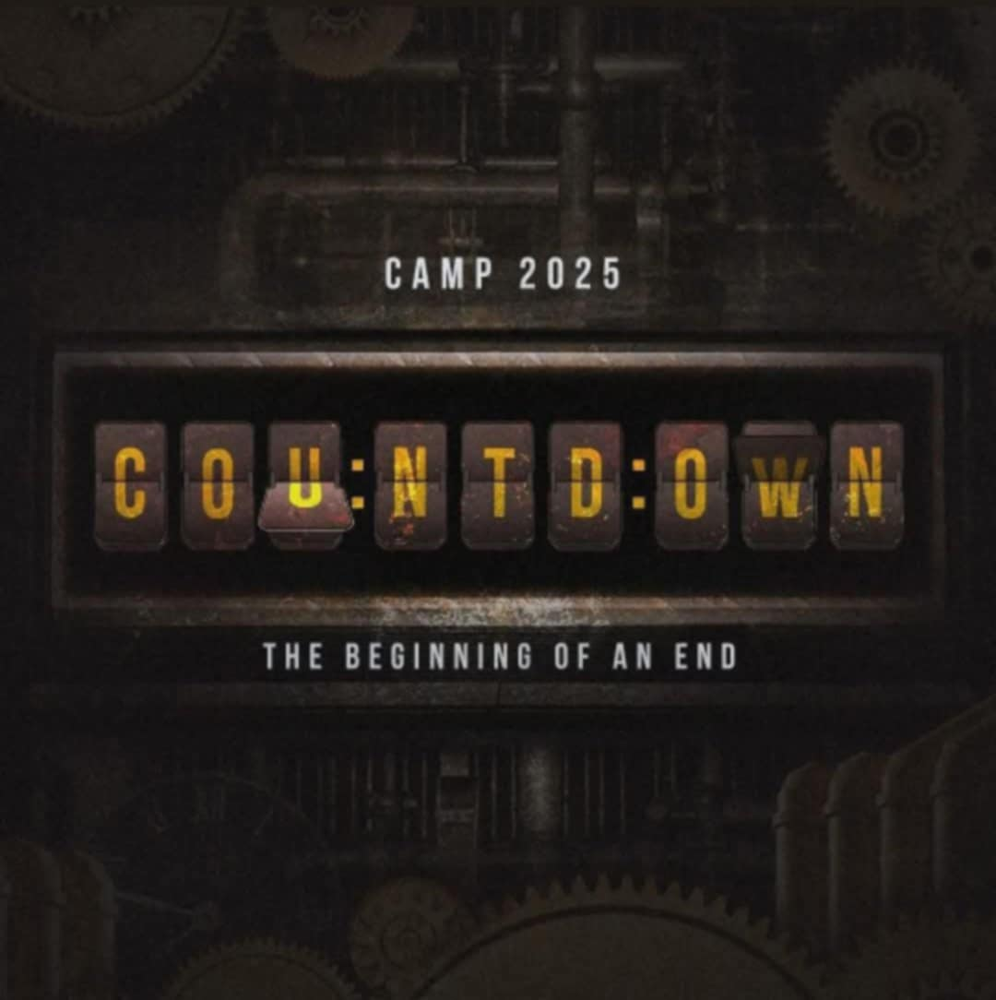

Join us for our uplifting Sunday service. Here's the latest schedule:

To ensure the safety and participation of all campers, we require consent from a parent or guardian.
• A "Google Form" will be provided for parents/guardians to sign electronically.
• An "official printed consent form" will also be issued and collected by the church.
Please make sure both steps are completed before camp day. Thank you for your cooperation!
• Bible and Notebook
• Extra Clothes (3–5 sets)
• Toiletries (soap, toothbrush, toothpaste, etc.)
• Towel and Blanket
• Flashlight
• Personal Water Bottle
• Snacks (optional)
• Medicine (if needed, with label/instructions)
• Positive attitude and open heart!